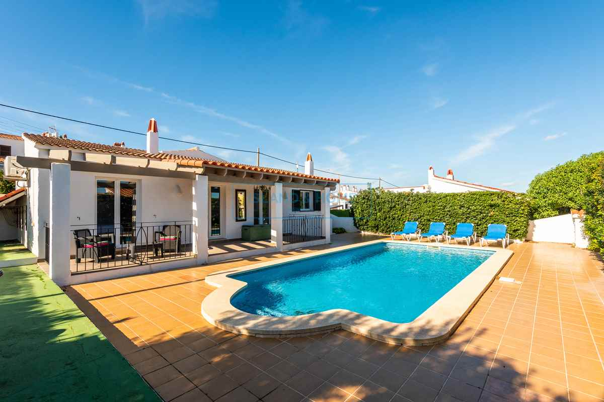

€495.000
Cala’n Porter, Alaior, Menorca, Spain
Open the listingPunch-under Cala’n Porter: traditional white villa with terracotta roof, wooden pergola porch and a built Roman-end private pool behind a mature hedge — tourist licence ready, short walk to the village. Distinct from board calan-porter-34496 (€600k) and calan-porter-34502 (€625k).
Opened 10 Sep 2026. Asking 495.000 €. IH card: 3 bed / 2 bath + private pool + tourist licence. Copy: open-plan lounge with wood-burning fireplace; three large bedrooms with A/C; mature hedge around pool; short walk to centre. Hero confirms built private pool and Menorcan porch. For Sale (not SSTC/Sold). Not a fixer.